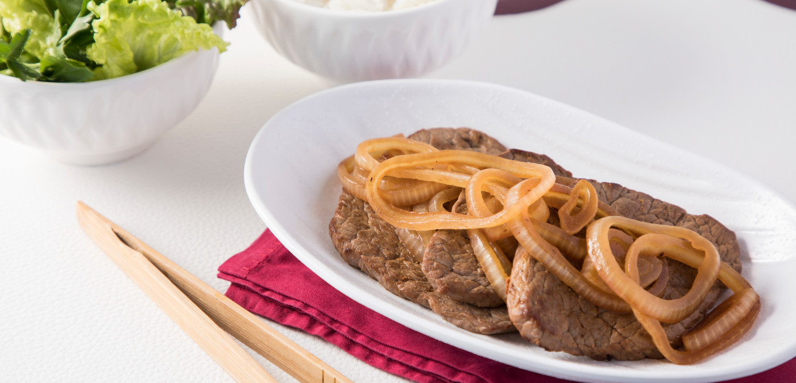

Bife acebolado

Descrição
Experimente essa clássica receita de bife acebolado e encante-se com sua combinação irresistível. Com camadas de sabor e uma textura incrível, essa receita é perfeita para reunir a família ao redor da mesa.
Aprenda a preparar essa delícia e surpreenda a todos com uma lasanha caseira de dar água na boca!
Ingredientes
- 200 g de carne bovina
- 2 sachês de sazón vermelho
- Azeite
- 2 cebolas grandes
- 1 copo americano de vinagre
- sal a gosto
Etapas
- Coloque a carne em uma vasilha.
- Tempere a carne com um sachê de sazón vermelho com uma colher (sopa) de azeite e misture.
- Reserve.
- Pique a cebola em rodelas e coloque em uma vasilha.
- Acrescente o vinagre na cebola e o outro sachê de sazón vermelho e misture.
- Depois pegue a carne já temperada e frite, cada lado da carne tem que ficar fritando por um minuto e meio.
- Depois de ter fritado a carne com a gardura que restou da carne, coloque a cebola onde você fritou a carne, e deixe a cebola fritar por dois minutos.